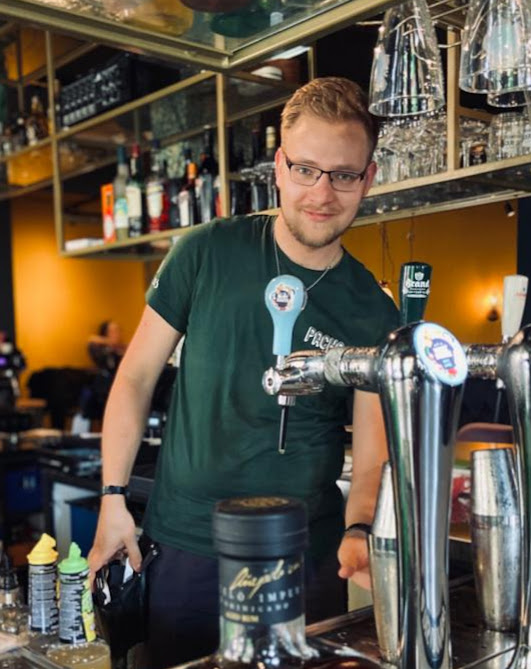

Bedrijfsleider Lebowski & Bar Pasta; Nijmegen: 2022
Bij Lebowski en Bar Pasta had ik mijn eerste ervaring als bedrijfsleider in de Horeca. Ik was werkzaam bij beide zaken, en was verantwoordelijk voor het dagelijkse reilen en zeilen. Ik heb deze baan tijdens mijn inwerkperiode stopgezet omdat ik merkte dat ik mijn passie voor de Horeca kwijt was en een nieuwe uitdaging in een andere sector aan wilde gaan.
Meedraaien dagelijkse werkzaamheden.
Voorraad beheren, waaronder:
Inslag, bestellingen aannemen van leveranciers.
Opslag, voorraad efficiënt plaatsen
Uitslag, voorraad vanuit “magazijn” naar werkplekken verplaatsen, in de vorm van bijvullen.
Verantwoordelijkheid dragen voor het draaien van beide bars vanaf begin tot en met einde dienst.
Verantwoordelijkheid dragen voor het draaien van beide bars vanaf begin tot en met einde dienst.
Floormanager bij Hotel Restaurant Asteria; Venray: 2021 - 2022
In 2021 werd ik door de Hotelmanager gebeld met de vraag of ik terug wilde komen bij het Hotel Asteria in managementfunctie. Dit aanbod heb ik met open armen aangenomen. Ik heb een jaar als floormanager gewerkt binnen Hotel Asteria, waar ik veel heb mogen ervaren. Ik heb mijn kennis van het bedrijf die ik had opgedaan als voltijdmedewerker gebruikt om verscheidene processen te vernieuwen en te verbeteren. Zo heb ik onder andere een drankenkaart ontworpen, een wijkindeling gecreëerd, bepaalde processen gestandaardiseerd en ben ik verantwoordelijk geweest voor het inwerkingsproces van ruim 15 nieuwe medewerkers.
Verantwoordelijkheid dragen voor het draaien van het hotel vanaf begin tot en met einde dienst.
Dagelijks kassa tellen en afstorten.
Telefonische reserveringen aannemen en verwerken.
Collega’s aansturen in dagelijkse werkzaamheden binnen de teams bediening, receptie, afwas, housekeeping en keuken.
Aansturen van een eigen afwasteam binnen het bestaande team.
Een plan van aanpak creëren met directe floormanager collega’s en deze hierin begeleiden bij afwezigheid van onze directe leidinggevenden. In praktijk de rechterhand van de restaurantmanager.
Het maandelijks werkrooster maken en verzenden van bovenstaande team.
Voorraad beheren, waaronder:
Inslag, bestellingen aannemen van leveranciers;
Opslag, voorraad efficiënt plaatsen;
Uitslag, voorraad vanuit “magazijn” naar werkplekken verplaatsen, in de vorm van bijvullen;
Bestellingen plaatsen op basis van wekelijkse telling voorraad.
Aanspreekpunt voor leveranciers, monteurs enz
Meedraaien dagelijkse werkzaamheden.
Bezig zijn met vernieuwing, structurering en verbetering van verouderde werkprocessen, zoals:
Het invoeren van het gebruik van wijken binnen het restaurant;
Het digitaliseren van de reserveringslijsten;
Het maken van een drankenkaart voor op de tafels;
Het invoeren van cocktails binnen het hotel;
Digitaliseren en versimpelen van kassatellingen;
Gedurende dienst volledige verantwoordelijkheid dragen voor bepaalde feesten en partijen in de banqueting hall, waarbij ik de volgende werkzaamheden heb uitgevoerd:
Gasten verwelkomen;
Serveren van dranken;
Verzorgen van buffetten;
Uitserveren van diners;
Opbouwen en later weer afbreken van de partijen in de banqueting halls;
Het aansturen van collega’s in bovenstaande werkzaamheden;
Het opvangen en aansturen van freelance werkkrachten, en het op juiste manier verwerken van geturfde of getelde dranken bij receptie;
Aanspreekpunt voor gasten;
Hoofd verantwoordelijke voor crew training, waaronder:
Het schrijven van een inwerkplan;
Het direct begeleiden van deze nieuwe werknemers;
Het delegeren van inwerken naar andere ervaren krachten, en deze hierbij voorzien van handvaten;
De voortgang van het inwerkproces doorcommuniceren naar directe collega’s.
Tijdens de tweede Covid lockdown was er geen werk te vinden in de horeca. Gezien een van mijn favoriete aspecten aan de horeca voorraadbeheer was, besloot ik een carrière in de logistiek een poging te geven. Dit heb ik gedaan bij DFDS Wijchen. In deze sector merkte ik dat ik het sociale aspect van de Horeca erg miste, zowel met collega's als met klanten. Ik heb deze periode hard gewerkt bij dit bedrijf, maar merkte toch na geringe tijd dat de logistiek niet mijn roeping is.
Het picken van orders.
Inwerken van een aantal nieuwe medewerkers.
Werken aan de inpaklijn.
Vrachtwagens in en uitladen met behulp van een EPT.
Pallets stapelen en inpakken voor transport.
De gewenste verkooplabels voor klanten op onze producten plakken.
In 2020 mocht ik bij Pacho aan de slag. Hier kreeg ik de mogelijkheid om als manager in dienst te treden. Aan dit bedrijf heb ik de meeste positieve ervaringen, en de loyaliteit die binnen mijn team is ontstaan bestaat nog steeds. Helaas werd de zaak verkocht zonder overname van personeel tijdens de pandemie.
Verantwoordelijkheid dragen voor het draaien van de bar vanaf opstarten tot en met afsluiten.
Dagelijks kassa tellen en afstorten.
Persoonlijke bedrijfsmail beheren, waaronder:
Bar Reserveringen aannemen en verwerken;
Sollicitaties verwerken en archiveren.
Telefonische reserveringen aannemen en verwerken.
Collega’s aansturen in dagelijkse werkzaamheden.
Het maandelijks/wekelijkse werkrooster maken en verzenden.
Voorraad beheren, waaronder:
Inslag, bestellingen aannemen van leveranciers;
Opslag, voorraad efficiënt plaatsen;
Uitslag, voorraad vanuit “magazijn” naar werkplekken verplaatsen, in de vorm van bijvullen;
Bestellingen plaatsen op basis van wekelijkse telling voorraad.
Aanspreekpunt voor leveranciers, monteurs enz.
Aanpassen, toepassen en soms creëren van passende corona protocols m.b.t. o.a. algemene hygiëne en specifieke reglementen vanuit de overheid.
Meedraaien dagelijkse werkzaamheden.

Aan het werk bij PACHO! Hier kreeg ik mijn eerste ervaring met management.
Medewerker bediening Hotel Restaurant Asteria; Venray: 2018-2020
Mijn eerste twee jaar bij Hotel Asteria waren mijn formatieve jaren. Hier heb ik geleerd te werken.
Gedurende dienst volledige verantwoordelijkheid dragen voor restaurant werkzaamheden, waaronder:
Gasten verwelkomen;
Bestellingen opnemen en doorvoeren;
Serveren van diners en dranken;
Op juiste wijze afrekenen met gasten;
M.E.P. van restaurant na lunch;
Opruimen en schoonmaken van restaurant, bar en hotelbar na dinnerservice;
Het aansturen van deeltijd collega’s in bovenstaande werkzaamheden.
Het samenwerken met de dienstdoende floormanager.
Het opleiden en trainen van nieuwe medewerkers.
Gedurende dienst volledige verantwoordelijkheid dragen voor bepaalde feesten en partijen in de banqueting halls en hotelbar, waarbij ik de volgende werkzaamheden heb uitgevoerd:
Gasten verwelkomen;
Serveren van dranken;
Verzorgen van buffetten;
Uitserveren van diners;
Opbouwen en later weer afbreken van de partijen in de banqueting halls;
Het aansturen van deeltijd collega’s in bovenstaande werkzaamheden;
Het opvangen en aansturen van freelance werkkrachten, en het op juiste manier verwerken van geturfde of getelde dranken bij receptie;
Assisteren bij en soms overnemen van sluiten van hotel;
Aanspreekpunt voor gasten en collega’s bij afwezigheid van floormanager.
Eerste medewerker Restaurant de Sjalot; Nijmegen: 2017-2018
Bij Restaurant de Sjalot serveerden we diner in fine dining vorm. Hier heb ik veel geleerd over winespice combinaties, en hier heb ik veel over etiquette geleerd.
Voorraad beheren, waaronder:
Inslag, bestellingen aannemen van leveranciers;
Opslag, voorraad efficiënt plaatsen;
Uitslag, voorraad vanuit “magazijn” naar werkplekken verplaatsen, in de vorm van bijvullen;
Aansturen van collega’s in dagelijkse werkzaamheden.
Eindverantwoordelijk voor algemene werkzaamheden en afsluiting van restaurant.
Kasboek invullen en verwerken.
Wekelijkse extra werkzaamheden verdelen onder zelf en collega’s.
Garanderen van productkwaliteit op moment van uitgifte vanuit keuken en bar.
Meedenken over nieuwe kaarten, nieuwe producten en alternatieven.
Probleemoplossing in geval van klachten etc.
Opstarten en sluiten van restaurant.
Het exterieur van Restaurant de Sjalot.
Festival medewerker bij verscheidene festivals; Nederland: 2014 - 2016
Werken bij festivals heeft mij geïnspireerd om een opleiding binnen de Horeca te volgen. Ik heb tijdens mijn studie op festivals gewerkt als bijbaan. Dit heeft me in contact gebracht met veel mensen van verschillende achtergronden. Ik heb hier heel veel geleerd.
Uitgifte en verkoop van dranken.
Biertapper bij losstaande tap.
Schenker van frisdrank en wijnen.
Runner verantwoordelijk voor aan- en bijvullen van alle koelkasten en andere voorraden.
Hoofd runner; verantwoordelijk voor bovenstaande taken en aansturen van andere runners.
Barhoofd; verantwoordelijk voor het bewaren en garanderen van algemene kwaliteit, het maken van taakverdelingen en aansturen van personeel.